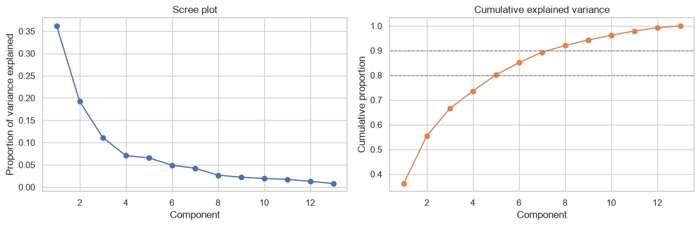
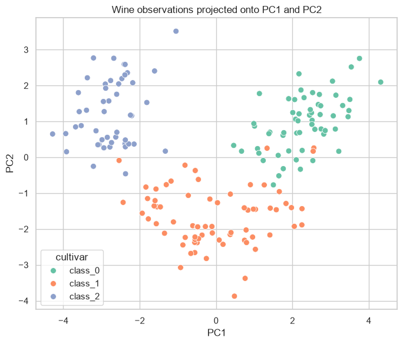
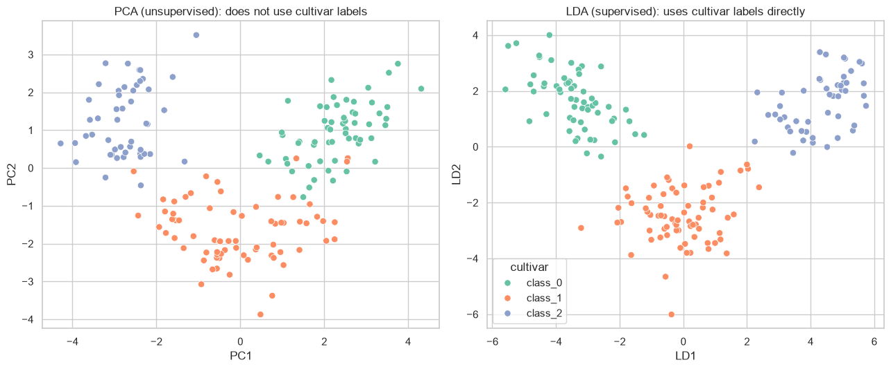

Week 7 Coding Practice (Solution): PCA vs. LDA#

This notebook contains a complete worked version of the student activity, including model answers to the reflection prompts. It is intentionally separated from the student notebook so the learning exercise stays focused on reasoning and interpretation.
import numpy as np
import pandas as pd
import matplotlib.pyplot as plt
import seaborn as sns
from sklearn.datasets import load_wine
from sklearn.preprocessing import StandardScaler
from sklearn.decomposition import PCA
from sklearn.discriminant_analysis import LinearDiscriminantAnalysis
sns.set_theme(style="whitegrid", context="notebook")
wine = load_wine()
X = wine.data
y = wine.target
feature_names = list(wine.feature_names)
class_names = list(wine.target_names)
df = pd.DataFrame(X, columns=feature_names)
df["cultivar"] = pd.Categorical.from_codes(y, categories=class_names)
df.head()
| alcohol | malic_acid | ash | alcalinity_of_ash | magnesium | total_phenols | flavanoids | nonflavanoid_phenols | proanthocyanins | color_intensity | hue | od280/od315_of_diluted_wines | proline | cultivar | |
|---|---|---|---|---|---|---|---|---|---|---|---|---|---|---|
| 0 | 14.23 | 1.71 | 2.43 | 15.6 | 127.0 | 2.80 | 3.06 | 0.28 | 2.29 | 5.64 | 1.04 | 3.92 | 1065.0 | class_0 |
| 1 | 13.20 | 1.78 | 2.14 | 11.2 | 100.0 | 2.65 | 2.76 | 0.26 | 1.28 | 4.38 | 1.05 | 3.40 | 1050.0 | class_0 |
| 2 | 13.16 | 2.36 | 2.67 | 18.6 | 101.0 | 2.80 | 3.24 | 0.30 | 2.81 | 5.68 | 1.03 | 3.17 | 1185.0 | class_0 |
| 3 | 14.37 | 1.95 | 2.50 | 16.8 | 113.0 | 3.85 | 3.49 | 0.24 | 2.18 | 7.80 | 0.86 | 3.45 | 1480.0 | class_0 |
| 4 | 13.24 | 2.59 | 2.87 | 21.0 | 118.0 | 2.80 | 2.69 | 0.39 | 1.82 | 4.32 | 1.04 | 2.93 | 735.0 | class_0 |
1. Inspect the data and decide whether to scale#
feature_ranges = df[feature_names].agg(["min", "max"]).T
feature_ranges["range"] = feature_ranges["max"] - feature_ranges["min"]
feature_ranges.sort_values("range", ascending=False)
| min | max | range | |
|---|---|---|---|
| proline | 278.00 | 1680.00 | 1402.00 |
| magnesium | 70.00 | 162.00 | 92.00 |
| alcalinity_of_ash | 10.60 | 30.00 | 19.40 |
| color_intensity | 1.28 | 13.00 | 11.72 |
| malic_acid | 0.74 | 5.80 | 5.06 |
| flavanoids | 0.34 | 5.08 | 4.74 |
| alcohol | 11.03 | 14.83 | 3.80 |
| proanthocyanins | 0.41 | 3.58 | 3.17 |
| total_phenols | 0.98 | 3.88 | 2.90 |
| od280/od315_of_diluted_wines | 1.27 | 4.00 | 2.73 |
| ash | 1.36 | 3.23 | 1.87 |
| hue | 0.48 | 1.71 | 1.23 |
| nonflavanoid_phenols | 0.13 | 0.66 | 0.53 |
Checkpoint 1: PCA preparation (worked answer)#
We use all 13 numeric chemical-composition features. Scaling is clearly appropriate here: proline ranges from about 278 to 1680, while features like hue range from about 0.48 to 1.71 and nonflavanoid_phenols from 0.13 to 0.66. Without standardization, proline and magnesium would dominate the variance calculation simply because of their numeric scale, not because they are more informative.
2. Standardize the features and fit PCA#
X_scaled = StandardScaler().fit_transform(X)
pca = PCA().fit(X_scaled)
explained = pca.explained_variance_ratio_
cumulative = np.cumsum(explained)
print("Explained variance ratio (first 5 components):", np.round(explained[:5], 3))
print("Cumulative explained variance (first 5 components):", np.round(cumulative[:5], 3))
Explained variance ratio (first 5 components): [0.362 0.192 0.111 0.071 0.066]
Cumulative explained variance (first 5 components): [0.362 0.554 0.665 0.736 0.802]
3. Scree plot and choosing the number of components#
n_components = np.arange(1, len(explained) + 1)
n_for_80 = int(np.argmax(cumulative >= 0.80) + 1)
n_for_90 = int(np.argmax(cumulative >= 0.90) + 1)
fig, axes = plt.subplots(1, 2, figsize=(12, 4))
axes[0].plot(n_components, explained, marker="o")
axes[0].set_title("Scree plot")
axes[0].set_xlabel("Component")
axes[0].set_ylabel("Proportion of variance explained")
axes[1].plot(n_components, cumulative, marker="o", color="C1")
axes[1].axhline(0.80, color="gray", linestyle="--", linewidth=1)
axes[1].axhline(0.90, color="gray", linestyle="--", linewidth=1)
axes[1].set_title("Cumulative explained variance")
axes[1].set_xlabel("Component")
axes[1].set_ylabel("Cumulative proportion")
plt.tight_layout()
plt.show()
print(f"2 components explain {cumulative[1]*100:.1f}% of the variance.")
print(f"{n_for_80} components are needed to reach 80% ({cumulative[n_for_80-1]*100:.1f}%).")
print(f"{n_for_90} components are needed to reach 90% ({cumulative[n_for_90-1]*100:.1f}%).")

2 components explain 55.4% of the variance.
5 components are needed to reach 80% (80.2%).
8 components are needed to reach 90% (92.0%).
Checkpoint 2: Dimensionality decision (worked answer)#
The scree plot drops after the first component and then flattens gradually rather than showing one unambiguous elbow. Two components explain only about 55% of the variance, five components are needed to reach 80%, and eight are needed to reach 90%. For a quick 2D visualization, two components are a reasonable, defensible choice. For a downstream classification or compression task where more fidelity matters, five or more components would be a better choice. There is no single “correct” number — it depends on the goal.
4. Loadings and interpretation#
loadings = pd.DataFrame(
pca.components_[:2].T,
index=feature_names,
columns=["PC1 loading", "PC2 loading"],
)
loadings.sort_values("PC1 loading", ascending=False)
| PC1 loading | PC2 loading | |
|---|---|---|
| flavanoids | 0.422934 | -0.003360 |
| total_phenols | 0.394661 | 0.065040 |
| od280/od315_of_diluted_wines | 0.376167 | -0.164496 |
| proanthocyanins | 0.313429 | 0.039302 |
| hue | 0.296715 | -0.279235 |
| proline | 0.286752 | 0.364903 |
| alcohol | 0.144329 | 0.483652 |
| magnesium | 0.141992 | 0.299634 |
| ash | -0.002051 | 0.316069 |
| color_intensity | -0.088617 | 0.529996 |
| alcalinity_of_ash | -0.239320 | -0.010591 |
| malic_acid | -0.245188 | 0.224931 |
| nonflavanoid_phenols | -0.298533 | 0.028779 |
Checkpoint 3: Interpretation (worked answer)#
PC1 has its largest positive loadings on flavanoids, total_phenols, od280/od315_of_diluted_wines, and proanthocyanins — all phenolic-compound measurements — so PC1 broadly tracks phenolic/flavonoid content. PC2 has its largest positive loadings on color_intensity, alcohol, and proline, so PC2 broadly tracks color intensity and alcohol-related measurements. These are useful descriptive labels, but they are summaries of correlated chemistry, not causal categories or an official wine-quality score — a component is a mathematical combination of the original variables, not automatically a meaningful real-world concept.
5. Visualize the observations in PCA space#
pca_2 = PCA(n_components=2).fit(X_scaled)
scores = pca_2.transform(X_scaled)
scores_df = pd.DataFrame(scores, columns=["PC1", "PC2"])
scores_df["cultivar"] = df["cultivar"]
plt.figure(figsize=(7, 6))
sns.scatterplot(data=scores_df, x="PC1", y="PC2", hue="cultivar", palette="Set2", s=50)
plt.title("Wine observations projected onto PC1 and PC2")
plt.tight_layout()
plt.show()

6. Compare with LDA: a supervised view of the same data#
lda = LinearDiscriminantAnalysis(n_components=2).fit(X_scaled, y)
lda_scores = lda.transform(X_scaled)
lda_df = pd.DataFrame(lda_scores, columns=["LD1", "LD2"])
lda_df["cultivar"] = df["cultivar"]
fig, axes = plt.subplots(1, 2, figsize=(13, 5.5))
sns.scatterplot(data=scores_df, x="PC1", y="PC2", hue="cultivar", palette="Set2", s=45, ax=axes[0], legend=False)
axes[0].set_title("PCA (unsupervised): does not use cultivar labels")
sns.scatterplot(data=lda_df, x="LD1", y="LD2", hue="cultivar", palette="Set2", s=45, ax=axes[1])
axes[1].set_title("LDA (supervised): uses cultivar labels directly")
plt.tight_layout()
plt.show()

Comparing the two projections (worked answer)#
LDA separates the three cultivars more cleanly than PCA. That is expected: LDA explicitly optimizes its axes to maximize separation between the known classes, while PCA only looks for directions of maximum overall variance and never sees the cultivar labels. PCA would still be the right tool whenever class labels are not available, when the goal is unsupervised exploration, or when we want a representation that is not tied to one particular labeling of the data.
7. AI interpretation audit#
An AI assistant was given your explained-variance and loadings output and produced the following interpretation:
“The first two principal components explain about 55% of the total variance, so these two components capture most of what matters in this dataset. PC1 appears to represent overall wine quality, and PC2 represents alcohol content. The remaining 11 components contain little useful information and can be discarded.”
Checkpoint 4: AI interpretation audit (worked answer)#
The 55% figure for the first two components is accurate, and PC2’s connection to alcohol-related measurements is reasonably supported by the loadings.
“Capture most of what matters” and “little useful information” in the remaining components are overstated — 45% of the variance remains, and components 3 onward carry real structure (for example,
ashandalcalinity_of_ashload heavily on PC3, not PC1 or PC2).The loadings partly support “alcohol content” for PC2, but “overall wine quality” for PC1 is a causal/evaluative leap — PC1 tracks phenolic-compound measurements, which may correlate with perceived quality but is not the same claim.
Retaining two components is reasonable for visualization, but not clearly the best choice overall — five components are needed just to reach 80% of the variance, so a downstream task that needs more fidelity would be poorly served by stopping at two.
Discarding the remaining components would lose the phenolic/ash-related structure captured in PC3 and beyond, which could matter for any analysis that depends on more than a 2D summary.
8. Your turn: test a different choice#
# Decide how many components you would need to reach 90% of the variance
# (use the printout from section 3), then refit PCA with that many components
# and re-examine whether PC1/PC2 alone told the full story.
n_components_alt = n_for_90 # the number of components needed for ~90% (computed above)
pca_alt = PCA(n_components=n_components_alt).fit(X_scaled)
print(f"With {n_components_alt} components, cumulative explained variance is "
f"{np.cumsum(pca_alt.explained_variance_ratio_)[-1]*100:.1f}%.")
With 8 components, cumulative explained variance is 92.0%.
Reflection (worked answer)#
The PC1/PC2 interpretation from checkpoint 3 still looks reasonable as a description of the two largest directions of variance, but it is clearly incomplete: eight components are needed to reach 90% of the variance, so a two-component summary leaves out a meaningful share of the dataset’s structure, including the ash-related pattern that shows up in PC3. Before trusting a two-component interpretation for a real decision, it would be worth checking whether the conclusion changes once more components (or a different preprocessing choice) are considered.
Using AI assistance#
You may use an AI assistant in this activity to ask what PCA output means, investigate why scaling matters, compare possible interpretations of loadings, or question a proposed component-retention decision. AI can help you think through these questions, but you are responsible for validating any claim against your own explained variance, scree plot, and loadings — as practiced in the audit above.
Final reflection (worked answer)#
PCA is the right tool when there are no class labels, or when the goal is to explore or compress the data without reference to a particular labeling. LDA is the right tool when class labels are available and the goal is to find directions that best separate those classes. In both cases, the number of components or directions to keep should be justified with evidence — explained/cumulative variance and a scree plot for PCA, and the number of classes minus one as an upper bound for LDA — while remembering that any resulting axis is a mathematical summary that still requires careful, caveated interpretation rather than being accepted mechanically.